Lift and fuse
Registered depth is back-projected with the TUM Freiburg-1 camera model and transformed by the official MoCap pose. Repeated support-height returns form a geometric reference raster.
Pipeline pilot only: RGB observation → registered depth → world-frame raster. The black trajectory is the official motion-capture pose; no robot traversability label is claimed.
REAL-DATA PILOT · TUM RGB-D
Event-level calibration of footprint-conditioned connectivity under partial observation
Occupancy marginals do not answer the question a robot asks at planning time: is there a support-valid path from a start to a goal for my footprint? ConPath treats that question as a calibrated event. A stochastic posterior produces spatially coherent support-map hypotheses, and a footprint-aware connectivity operator evaluates the event on each hypothesis rather than multiplying independent cell probabilities. This project page makes the data path inspectable with a real RGB-D sequence: sampled depth pixels are lifted with the official Freiburg-1 intrinsics and motion-capture poses, fused into a horizontal world-frame reference raster, and evaluated on future-frame queries.
The current real-data result is intentionally a pilot. It validates the RGB-D → world geometry → event-audit path, while a paper-grade navigation claim still requires auditable traversability labels, a trained neural checkpoint, and sequence/site-held-out public benchmarks.
From partial RGB-D evidence to a task-level connectivity probability.
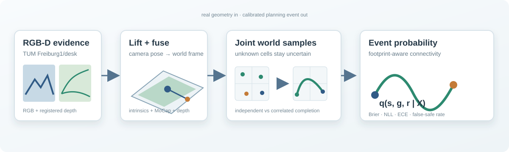
s reaches goal g for radius r. The real-data adapter supplies geometry; ConPath's research object is the event posterior q(s, g, r | X).Registered depth is back-projected with the TUM Freiburg-1 camera model and transformed by the official MoCap pose. Repeated support-height returns form a geometric reference raster.
Unknown cells retain uncertainty. The pilot compares independent-cell completion with a spatially correlated temporal random field clamped by observed evidence.
Each sampled world is eroded by a disk footprint and queried with four-neighbour connectivity. Brier, NLL, ECE, and false-safe rate attach calibration to the planning event.
One sequence, one transparent protocol, and no synthetic media in the primary presentation.
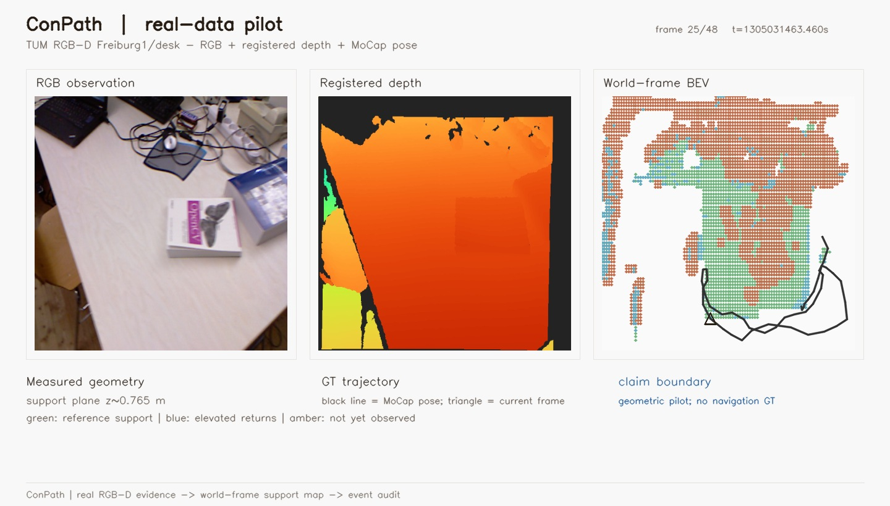
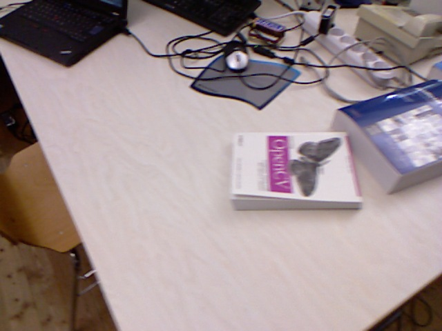
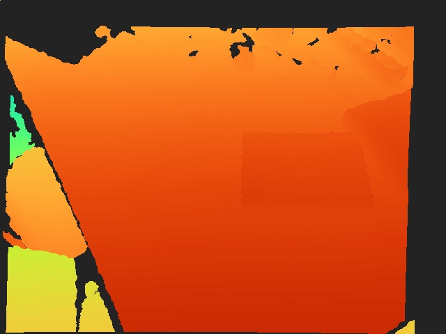
Future-frame event audit on the measured reference raster. Lower is better.
| Method | Brier ↓ | NLL ↓ | ECE ↓ | False-safe @ 0.8 ↓ |
|---|---|---|---|---|
| Loading tracked real-data snapshot… | ||||
MEASURED PILOT
The snapshot is loaded from site/data/tum_rgbd_pilot.json.
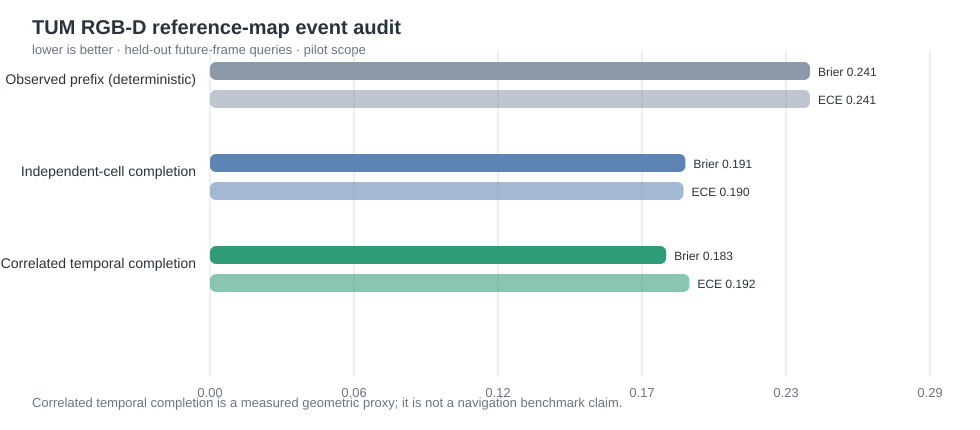
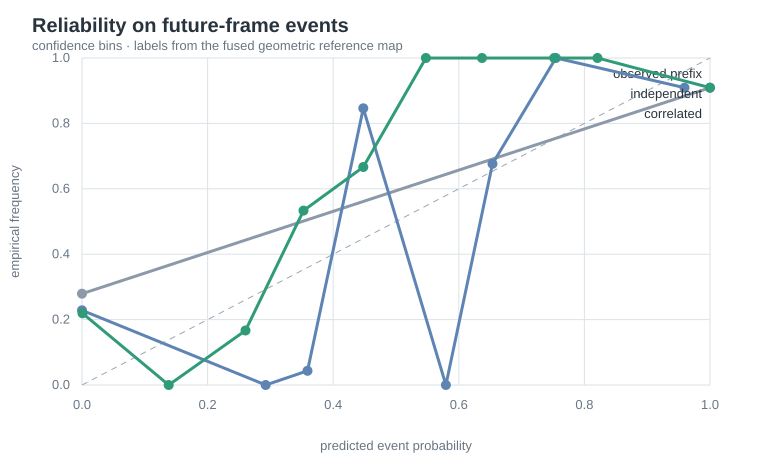
Data source: TUM RGB-D, TU Munich ↗. Derived assets and exact commands are versioned with the ConPath repository ↗.
DATA AUDIT · NON-OFFICIAL PROVENANCE SPLIT · NOT A MODEL RESULT
A target-blind, scene-disjoint query audit that freezes the next model-evaluation protocol without treating data statistics as algorithm performance.
provenance.original_split, which is scene-disjoint; the archive directory is used solely to locate bytes inside the ZIP.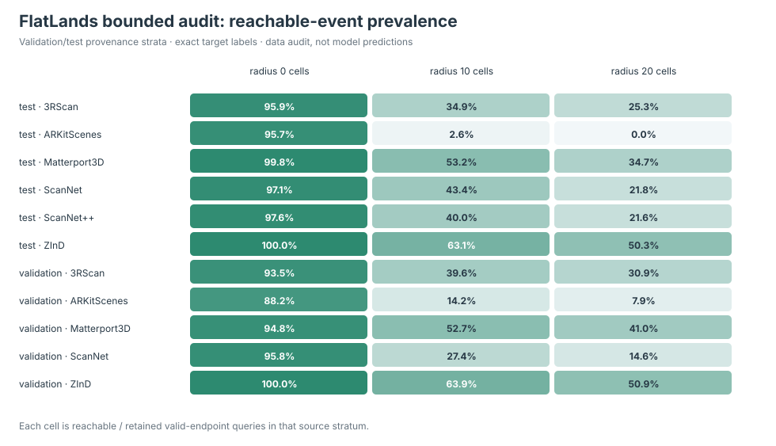
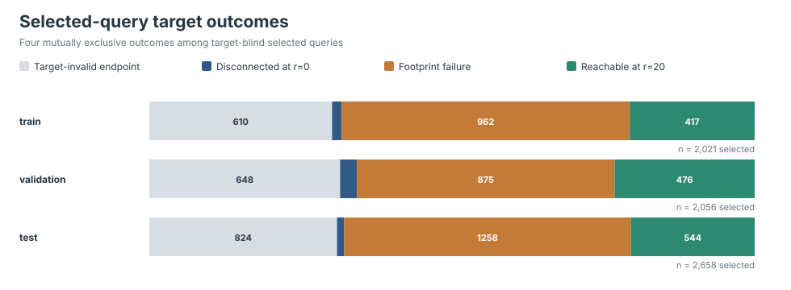
| Provenance stratum | Retained | Reachable r=0 | Reachable r=10 | Reachable r=20 | Scene failure rate | Gate |
|---|---|---|---|---|---|---|
| Loading tracked FlatLands audit snapshot… | ||||||
| Split pair | Official archive split | Provenance split used |
|---|---|---|
| Loading overlap audit… | ||
P1 DATA GATE
This section reports dataset suitability only. Model baselines and ConPath results will appear after the fixed evaluator is complete.
Download compact audit JSON ↗VALIDATION BASELINES · PROVENANCE SPLIT · TEST LOCKED · NOT FINAL PAPER RESULT
Same FlatLands validation provenance split, same 4,653 frozen query events, and the same radii (0/10/20 cells) for every row. The first pass compares a radius-only control, a deterministic completion, an independent-cell event sampler, and a direct-query predictor.
| Method | Brier ↓ | NLL ↓ | ECE ↓ | False-safe @ 0.8 ↓ | Coverage @ 0.8 |
|---|---|---|---|---|---|
| Loading tracked validation baseline snapshot… | |||||
P1 VALIDATION CHECKPOINT
The validation baseline snapshot is generated from the frozen evaluator and is explicitly excluded from final paper claims.
Download baseline JSON ↗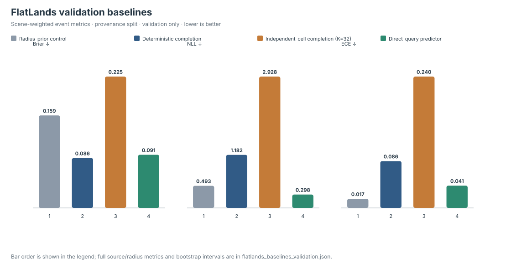
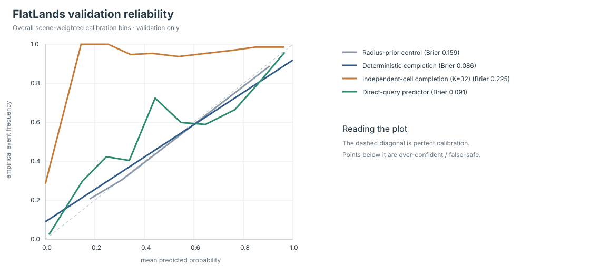
| Method | r = 0 Brier ↓ | r = 10 Brier ↓ | r = 20 Brier ↓ | r = 20 false-safe ↓ |
|---|---|---|---|---|
| Loading radius-stratified baseline snapshot… | ||||
| Method |
|---|
| Loading source-stratified baseline snapshot… |
Validation qualitative diagnostic (not a final paper claim). These panels use a real public-data ConPath checkpoint and the frozen validation replay. They show the observed BEV, the ConPath posterior, a deterministic completion control, and the reference map for the same query; the event probabilities are printed in the panel header. A positive case and an uncertainty/failure case are both shown so the visual does not imply an unconditional win.
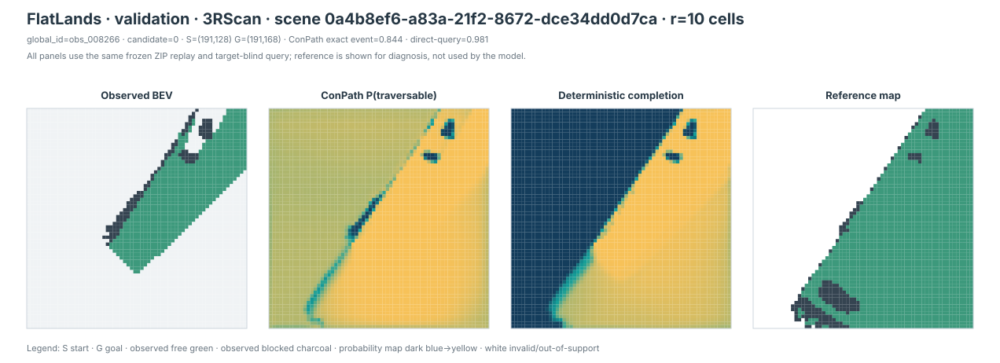
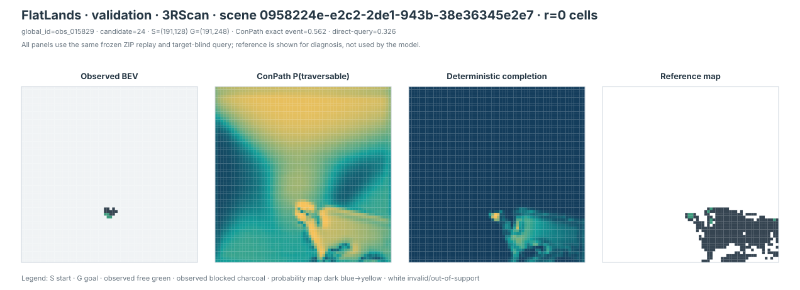
RECENT METHODS · CONTRACT CHECKED
We are adding recent uncertainty/completion methods without mixing incompatible 3-D occupancy scores into this 2-D event task. The final same-dataset table will keep the frozen 4,653 query events, radii 0/10/20, three seeds, and a capacity-matched ConPath encoder (F=16, 120,108 parameters). Cross-task numbers remain references only.
| Method | Year | Relation | Status |
|---|---|---|---|
| PaSCo | 2024 | uncertainty-aware completion | same-contract 3-subnet control evaluated (validation-only) |
| SGN-L | 2024 | 12.5M compact SSC reference | reference-only (3-D/camera) |
| S4C | 2024 | implicit field completion | port under review |
| SceneSense | 2024 | diffusion occupancy | 2-D port candidate |
| FlatLands | 2026 | same-task stochastic completion | official weights/code check |
Full parameter table, fairness rules, and incompatibility notes: RECENT_BASELINES.md ↗
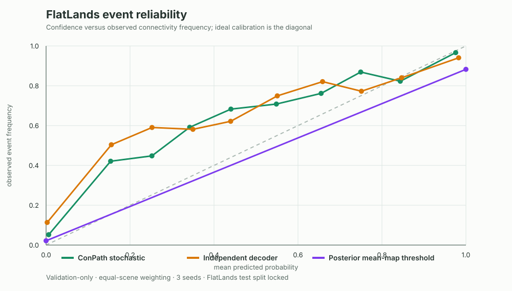
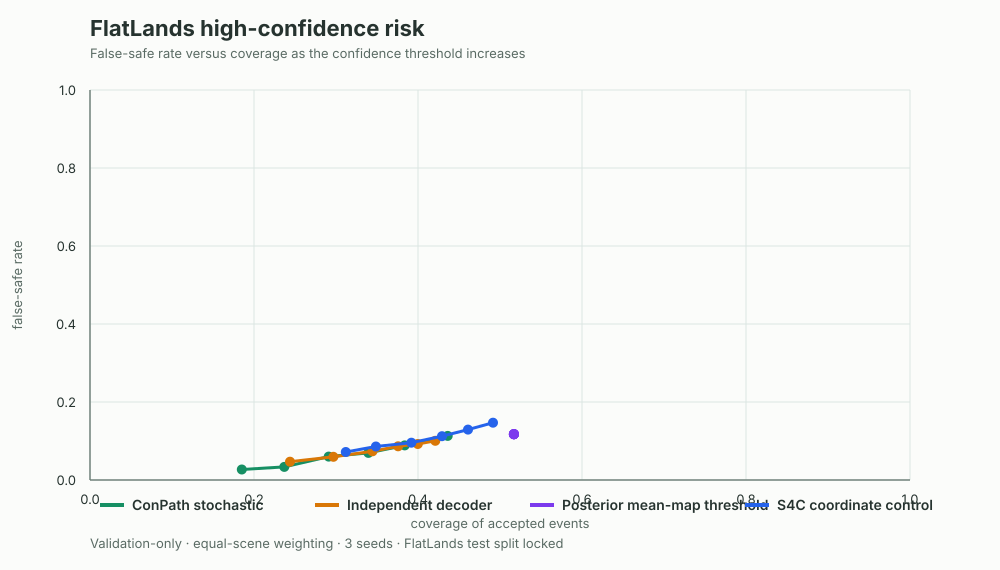
Protocol: P1_BASELINE_PROTOCOL.md ↗. Checkpoints, manifests, and exact reports remain in the reproducibility workspace; no test result is published here.
/usr/bin/python3 scripts/run_tum_rgbd_pilot.py \
--publish-siteRaw data stays in the ignored data/raw/ directory. The command writes the report, CSV, figures, and the compact real-data video used on this page.
This pilot has no human or robot collision labels. Its connectivity labels are defined on a fused geometric reference map. It is evidence that the real-data path runs end to end, not evidence that ConPath is already ready for ICRA/IROS.
Read the full protocol ↗@misc{conpath2026,
title = {ConPath: Connectivity-Calibrated Path Reliability},
author = {ConPath contributors},
year = {2026},
note = {Research prototype and real-data pilot}
}
@inproceedings{sturm2012rgbd,
title = {A Benchmark for the Evaluation of RGB-D SLAM Systems},
author = {Sturm, J. and Engelhard, N. and Endres, F. and Burgard, W. and Cremers, D.},
booktitle = {IEEE/RSJ IROS},
year = {2012}
}{kind=link}